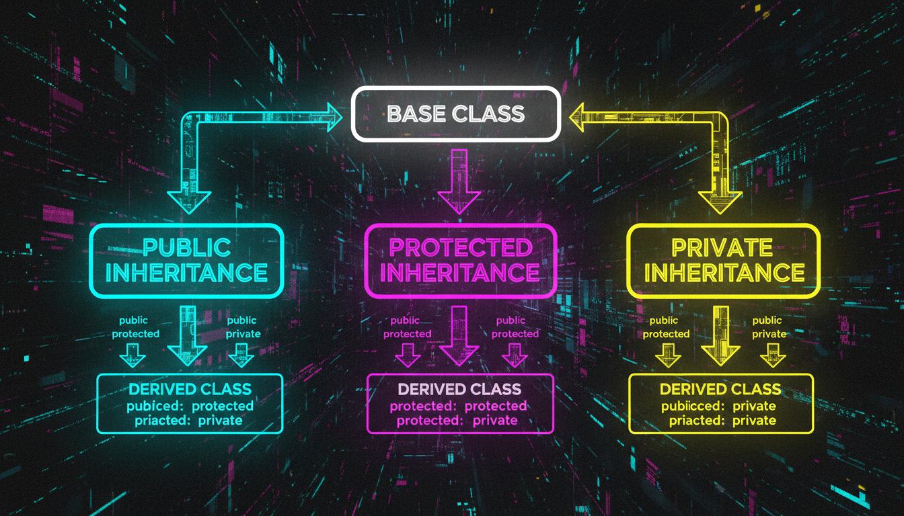

public, protected, private наслідування, множинне наслідування

| Тип | public в базовому | protected в базовому |
|---|---|---|
| public | public | protected |
| protected | protected | protected |
| private | private | private |
class Base {
public: int x;
protected: int y;
private: int z;
};
class PublicDerived : public Base {
// x — public, y — protected, z — недоступно
};
class ProtectedDerived : protected Base {
// x — protected, y — protected, z — недоступно
};
class PrivateDerived : private Base {
// x — private, y — private, z — недоступно
};